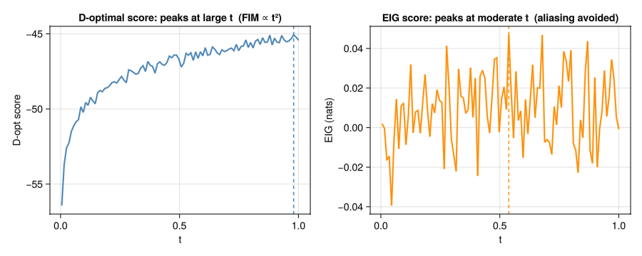
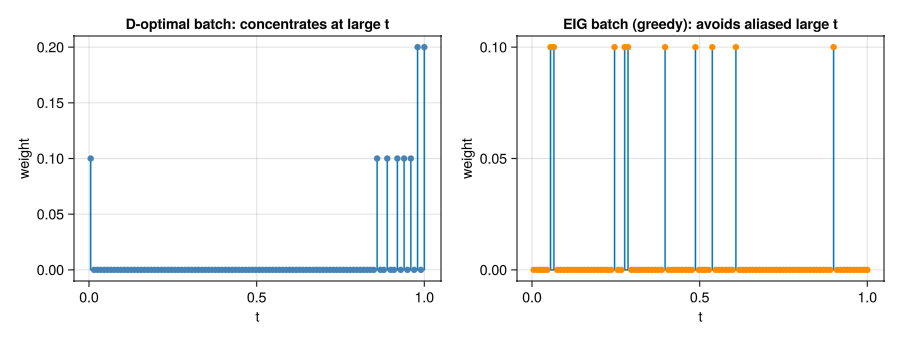
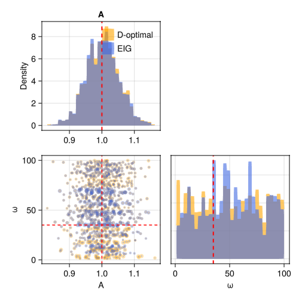
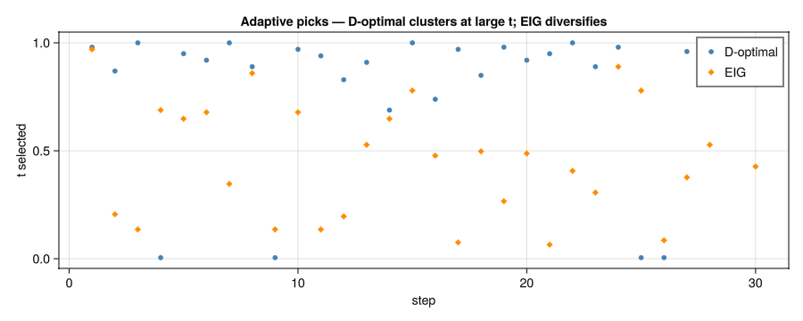
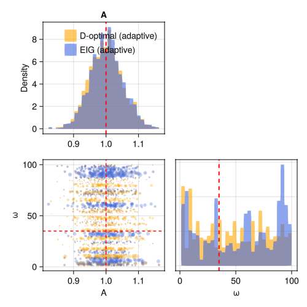

EIG vs D-optimality
FIM-based design criteria (D, A, E-optimal) rely on a local-Gaussian approximation: the design score at each candidate is the Fisher information, which is proportional to the squared gradient of the model at the current parameter estimate. This approximation is exact when the posterior is Gaussian but can fail badly for nonlinear models with broad priors.
Expected Information Gain (EIG) scores candidates by the mutual information between the parameters and the next observation, averaged over the full posterior. It sees the nonlinearity directly and avoids committing to a single mode.
A periodic model with a broad frequency prior is a textbook case where the two approaches diverge.
The aliasing problem
Consider:
\[y = A \cos(\omega \, t) + \varepsilon, \qquad \omega \sim \text{Uniform}(1, 100)\]
The Fisher information about $\omega$ at time $t$ is
\[\text{FIM}_\omega(t) = \frac{A^2 t^2 \sin^2(\omega t)}{\sigma^2} \xrightarrow{\text{avg. over }\omega} \;\frac{A^2 t^2}{2\sigma^2}\]
This grows as $t^2$, so the D-optimal criterion always prefers large $t$.
But at large $t$, many frequencies $\omega$ produce the same $\cos(\omega t)$ value — the observation is aliased. Each measurement adds little unique information about which frequency we're actually looking at. EIG correctly penalises this by integrating the full likelihood, not just its gradient.
using OptimalDesign
using CairoMakie
using ComponentArrays
using Distributions
model(θ, x) = θ.A * cos(θ.ω * x.t)
θ_true = ComponentArray(A = 1.0, ω = 35.0)
σ = 5.0 # deliberately large to make aliasing worse
acquire(x) = model(θ_true, x) + σ * randn()Setting up the two problems
prior_specs = (A = Normal(1.0, 0.05), ω = Uniform(1.0, 100.0))
prob_dopt = DesignProblem(model;
parameters = prior_specs,
sigma = Returns(σ),
criterion = DCriterion())
prob_eig = DesignProblem(model;
parameters = prior_specs,
sigma = Returns(σ),
criterion = EIGCriterion(outer_samples = 50, inner_samples = 50))
candidates = candidate_grid(t = range(0.005, 1.0, length = 100))
ts = [c.t for c in candidates]
Random.seed!(42)
prior_dopt = Particles(prob_dopt, 1000)
Random.seed!(42)
prior_eig = Particles(prob_eig, 1000)Comparing criterion scores
Before designing anything, we can score every candidate under each criterion. The D-optimal score (proportional to FIM) rises steadily with $t$; the EIG score peaks at a moderate time and then falls as aliasing sets in:
scores_dopt = score_candidates(prob_dopt, prior_dopt, candidates; posterior_samples = 200)
scores_eig = score_candidates(prob_eig, prior_eig, candidates; posterior_samples = 100)
fig = Figure(size = (900, 360))
ax1 = Makie.Axis(fig[1, 1]; xlabel = "t", ylabel = "D-opt score",
title = "D-optimal score: peaks at large t (FIM ∝ t²)")
lines!(ax1, ts, scores_dopt; color = :steelblue, linewidth = 2)
vlines!(ax1, [ts[argmax(scores_dopt)]]; color = :steelblue, linestyle = :dash)
ax2 = Makie.Axis(fig[1, 2]; xlabel = "t", ylabel = "EIG (nats)",
title = "EIG score: peaks at moderate t (aliasing avoided)")
lines!(ax2, ts, scores_eig; color = :darkorange, linewidth = 2)
vlines!(ax2, [ts[argmax(scores_eig)]]; color = :darkorange, linestyle = :dash)
fig
The dashed line marks the argmax of each score. D-optimal recommends measuring near $t = 1$; EIG recommends a much shorter time.
Batch designs
Both criteria now select 10 measurements. D-optimal uses the exchange algorithm; EIG uses greedy selection (the exchange algorithm is not available for EIG because the criterion is non-convex in design weights):
Random.seed!(42)
ξ_dopt = design(prob_dopt, candidates, prior_dopt; n = 10)
Random.seed!(42)
ξ_eig = design(prob_eig, candidates, prior_eig; n = 10)
w_dopt = weights(ξ_dopt, candidates)
w_eig = weights(ξ_eig, candidates)
fig2 = Figure(size = (900, 340))
ax3 = Makie.Axis(fig2[1, 1]; xlabel = "t", ylabel = "weight",
title = "D-optimal batch: concentrates at large t")
Makie.stem!(ax3, ts, w_dopt; color = :steelblue)
ax4 = Makie.Axis(fig2[1, 2]; xlabel = "t", ylabel = "weight",
title = "EIG batch (greedy): avoids aliased large t")
Makie.stem!(ax4, ts, w_eig; color = :darkorange)
fig2
Posterior comparison
Running both designs against the simulated experiment and comparing the resulting posterior on $\omega$:
Random.seed!(42)
result_dopt = run_batch(ξ_dopt, prob_dopt, prior_dopt, acquire)
Random.seed!(42)
result_eig = run_batch(ξ_eig, prob_eig, prior_eig, acquire)
plot_corner(result_dopt.posterior, result_eig.posterior;
labels = ["D-optimal", "EIG"], truth = θ_true)
Adaptive comparison
The gain from EIG is most apparent in adaptive experiments, where the posterior is updated after each measurement. D-optimal keeps visiting large $t$ because the FIM is large there, even when those measurements no longer narrow the posterior further. EIG adapts its location choices as the posterior evolves:
Random.seed!(42)
prior_da = Particles(prob_dopt, 2000; resampling = SystematicResampling(ess_threshold = 0.25))
Random.seed!(42)
prior_ea = Particles(prob_eig, 2000; resampling = SystematicResampling(ess_threshold = 0.25))
Random.seed!(42)
result_da = run_adaptive(prob_dopt, candidates, prior_da, acquire;
budget = 30.0, n_per_step = 1, headless = true)
Random.seed!(42)
result_ea = run_adaptive(prob_eig, candidates, prior_ea, acquire;
budget = 30.0, n_per_step = 1, headless = true)[ Info: Adaptive experiment: budget=30.0, 100 candidates, 2 parameters (A, ω)
[ Info: Step 10/30: spent=10.0/30.0, ESS=1918.0, posterior=(A=1.0, ω=50.177)
[ Info: Step 20/30: spent=20.0/30.0, ESS=1744.0, posterior=(A=1.0, ω=49.763)
[ Info: Step 30/30: spent=30.0/30.0, ESS=1549.0, posterior=(A=1.0, ω=47.463)
[ Info: Experiment complete: 30 observations, cost=30.0/30.0, ESS=1549.0
[ Info: Final posterior: A=1.0, ω=47.463
[ Info: Adaptive experiment: budget=30.0, 100 candidates, 2 parameters (A, ω)
[ Info: Step 10/30: spent=10.0/30.0, ESS=1805.0, posterior=(A=1.001, ω=52.289)
[ Info: Step 20/30: spent=20.0/30.0, ESS=1567.0, posterior=(A=1.002, ω=50.475)
[ Info: Step 30/30: spent=30.0/30.0, ESS=1386.0, posterior=(A=1.002, ω=52.962)
[ Info: Experiment complete: 30 observations, cost=30.0/30.0, ESS=1386.0
[ Info: Final posterior: A=1.002, ω=52.962seq_d = [e.x.t for e in result_da.log]
seq_e = [e.x.t for e in result_ea.log]
fig3 = Figure(size = (900, 360))
ax5 = Makie.Axis(fig3[1, 1:2]; xlabel = "step", ylabel = "t selected",
title = "Adaptive picks — D-optimal clusters at large t; EIG diversifies")
scatter!(ax5, 1:length(seq_d), seq_d; color = :steelblue, marker = :circle, markersize = 8, label = "D-optimal")
scatter!(ax5, 1:length(seq_e), seq_e; color = :darkorange, marker = :diamond, markersize = 8, label = "EIG")
axislegend(ax5; position = :rt)
fig3
plot_corner(result_da.posterior, result_ea.posterior;
labels = ["D-optimal (adaptive)", "EIG (adaptive)"],
truth = θ_true)
When does EIG matter?
| Scenario | D-optimal | EIG |
|---|---|---|
| Tight Gaussian prior | ✓ (exact) | ~ equivalent |
| Broad or multi-modal prior | ✗ (may alias) | ✓ |
| Batch design with many candidates | ✓ (exchange algorithm) | slower (greedy only) |
| Adaptive design | ✓ | ✓ (usually better) |
EIG is more expensive per candidate (nested Monte Carlo) and does not support batch weight optimisation via the exchange algorithm. It pays off when the prior is broad and the model is nonlinear enough that the FIM is a poor proxy for information.
See also
- Batch Design — D-optimal design with exchange algorithm
- Adaptive Design — sequential design loop
- Theory — EIG definition and nested-Monte-Carlo estimator